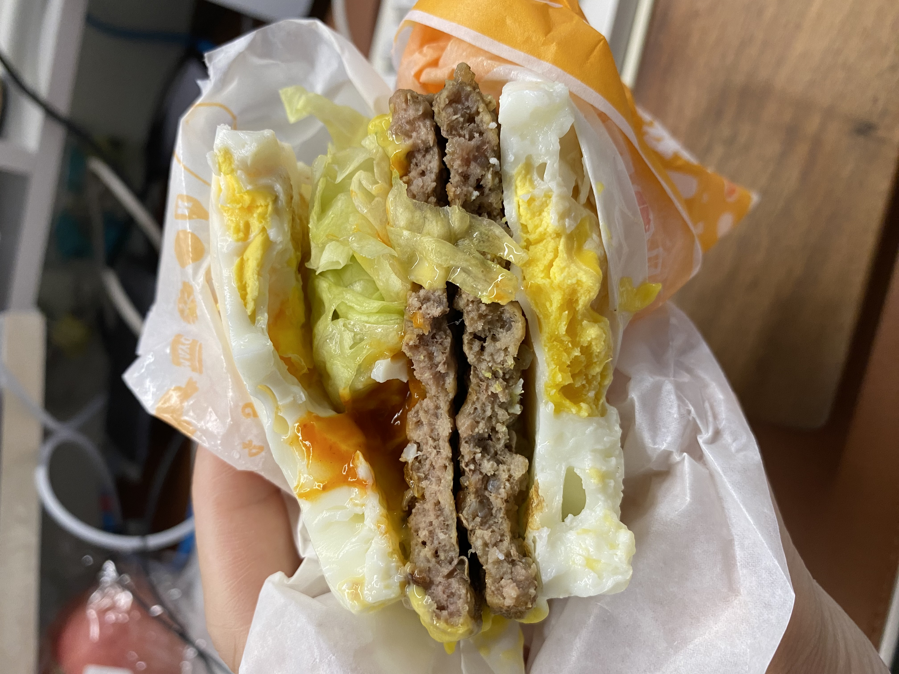
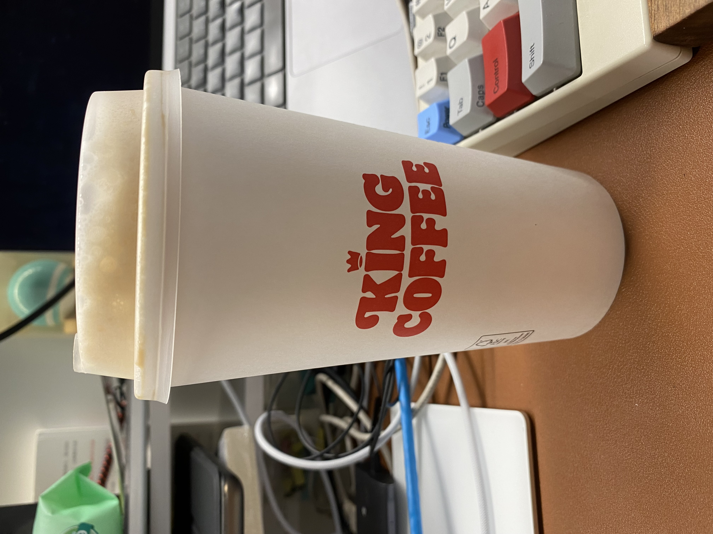
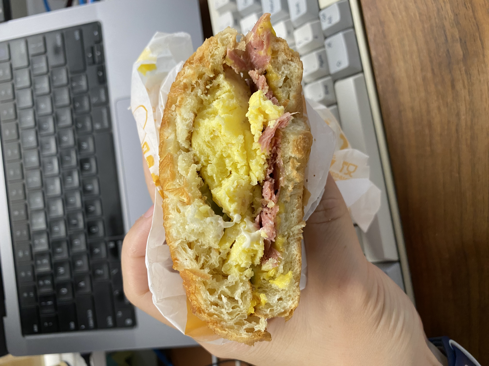
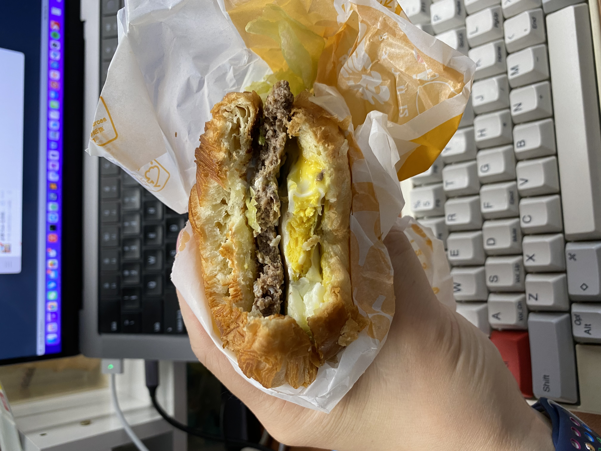
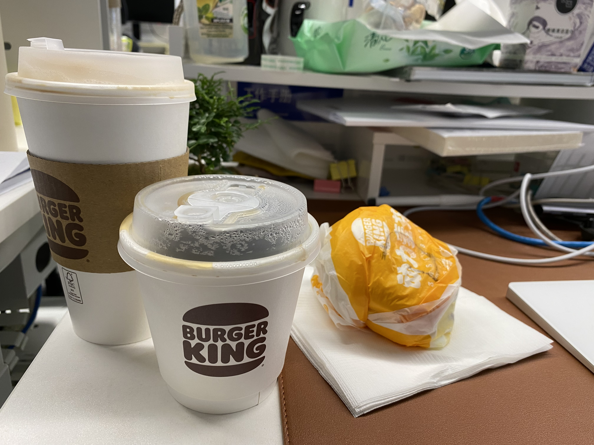

今天这篇博客和之前的有些不同，主要区别是这篇是我用语音写的。也就是把「飞书妙记」打开录音，之后转成文字整理出来。
为什么要拿语音写呢？我之前写博客都是通过电脑编写，写的过程中会浏览一些其他网页，找找资料之类的，而且打字的话很容易打断思绪。所以我这次尝试用说的形式来整理一篇博客出来。
用语音写的另一个原因是它会逼着我一直的去往下不停地去说，会尽量的不去中断，尽量的去保持思考状态，往外输出，也许还能提升我的口语表达能力。如果是打字的话，一会儿看看这个一会儿看看那个很容易被中断。
使用语音录入完转文字后，再通过电脑把段落顺序做些调整，把口语化表达改为书面表达就可以发布了。我发现整理所花费的时间比说的时间还要长，录了 20 分钟，整理了 1 小时。
明天就是国庆节了，周围有小一半的同事请了假，我下午也请了半天假，所以利用中午的时间把这篇博客发完也就要下班了，祝大家国庆节快乐。
这篇博客想聊一下我近一个月来如何解决上班时间早饭和午饭的问题。
我们公司（望京 Soho）附近有很多餐厅、便利店，我看到公司对面有一个店面很大的「汉堡王」，我之前对汉堡王的印象或者说对汉堡的印象，是一个不是特别健康的食品。不过我依然抱着试一试的态度搜了一下他家的菜单，顺便看一看有没有优惠之类的，毕竟打工人还是想找一些经济实惠的东西解决温饱问题。
经过我一番调查后发现，「汉堡王」有一个有 3 种会员：
- 19.9 元： 早餐半价
- 9.9 元：每天可以 8 元买一杯咖啡
- 29.9 元：包括了上面两个优惠，还额外多一个每天减免一次是外卖送餐费用。
看了一下他家的早餐，早餐里边有一个汉堡特特别吸引我，名字叫「双蛋双牛堡」。它的厉害之处就在于上下两层的面包皮换成了两个煎蛋，中间是两片牛肉。所以这是个对健身人士非常友好的汉堡，当然我也不是健身人士，我只是说它里面的蛋白质非常的丰富。
我办了 29.9 的那个会员，因为我还喜欢喝咖啡。平时的话我不会频繁去买外边的咖啡，而是喝公司免费的美式。外边的咖啡比如瑞幸 15 起，星巴克 30 起，我一周也就喝一次外边的咖啡，通常是周五。但是有了这个会员，我每天都可以喝一杯咖啡，8 块钱不心疼，虽然和之前相比花的更多了，但是心理更愉悦了。
我大概已经用使用这个会员一个月了，基本上每天早晨都是买「双蛋双牛堡」套餐，套餐包括一个汉堡再加一个小杯的美式，我一般换成豆浆，因为公司有免费的美式。偶尔想解解馋，或者是想吃一些别的汉堡的话也会换一换。今天主要就说「双蛋双牛堡」，我觉得我一个男生一次性把它吃完都会有些顶，女生应该是不太好一次性吃完的。我刚开始是每天早晨就把汉堡吃完，中午吃一块鸡胸肉或者就不吃了，这样我发现下午会有些饿。最近这两周我换了个办法：把汉堡分成两份，因为它是上下各一个煎蛋、中间两片牛肉，我就从中间均分，早晨吃一片牛肉加一个煎蛋，中午吃一片牛肉加一个煎蛋，而且还有一小杯口味不错的热豆浆，这样的话我的蛋白质也是够的，并且还能保证下午在吃晚饭前不那么饿。

这种方式，早饭加午饭也只花了 10 块钱，中午的时候我还会去买一杯咖啡，8 元咖啡可以在所有的「汉堡王」销售的咖啡里任选一种，包括杯型、口味都是任选，不管多少钱，最后都会减成 8 元。所以我一定是考虑着自身利益最大化的原则，我每次都是买最贵的澳白，而且是买大杯。

「汉堡王」的大杯就是「星巴克」的超大杯，它没有从中杯开始算，用的小杯、中杯、大杯三种规格，它的大杯跟星巴克的超大杯是一样的。「星巴克」超大杯的澳白我记着好像是 38，「汉堡王」 8 块钱，瞬间就省了 30。口味的话我觉得差的不是特别多。我现在就是边喝「汉堡王」的咖啡，边写这篇博客的。
这个汉堡叫「帕斯雀牛肉可颂堡」，也特别好吃的，偶尔想解一次馋了的话我也会去买这个。

还有一个汉堡叫「牛肉蛋可颂」，也是在早餐里我也是觉得比较好吃。

其实我也没吃太多种，目前吃的每一种都觉得很好吃。其他早餐还有咸蛋黄鸡肉粥、老北京烤鸡卷、咸蛋黄鸡肉卷等等。这些我还没有尝试过，后边有机会的话可以尝试一下。
我中午就不用再去出去排队去吃饭了，多出来的时间就可以看看书或者是出去玩一会陆地冲浪板，陆冲这个东西是特别的上头，建议大家有机会都试一试。
下边这张图是我今天早晨买的，因为下午要请假，所以中午就不再单独去买杯咖啡喝了，早晨就一起把咖啡买了，可以看到一个大杯的澳白，加一个小杯美式（今天没换豆浆），再加一个汉堡（今天汉堡卖相不太好），这一套下来才 18 块钱。在其他地方，这些钱也就只能买一杯咖啡，同样的价格能在「汉堡王」买下三件套，真的是能开心一整天。

可以算一下，每个月我们按照 22 天工作日算，每天花费 18 块钱，也就是早饭+午饭再加一杯咖啡（晚餐公司提供），一共是 396 的话再加上一个月的会员费 30 元。这样的话一个月只需花费 426 就能把早饭和午饭解决掉。我觉着是比较划算的，而且蛋白质摄入一定是没有太大问题的，而且还能让我解咖啡的馋，让我每天都可以通过一杯超大澳白续命，提升工作的幸福感。工作已经很苦了，不如再来一杯好喝的咖啡让自己幸福一下。
关于打工人的早午餐就分享到这里，如果你附近有汉堡王的话，也可以试一试。因为我是喜欢喝咖啡又想解决双餐的问题，所以选的是 29.9 的会员。如果你只想喝咖啡，可以办 9.9 的。如果你只需要早餐，也可以办 19.9 的。
我觉得 29.9 的这个会员是很值。如果「汉堡王」的「双蛋双牛堡」不下架，且我不换公司的话，我应该会去一直续费。
今天入职「探探」两周年，过的真快，下班了，拜了个拜。👋🏻